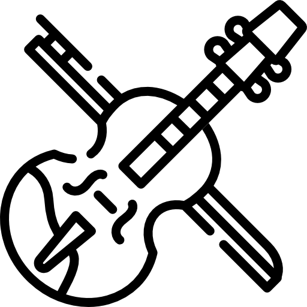
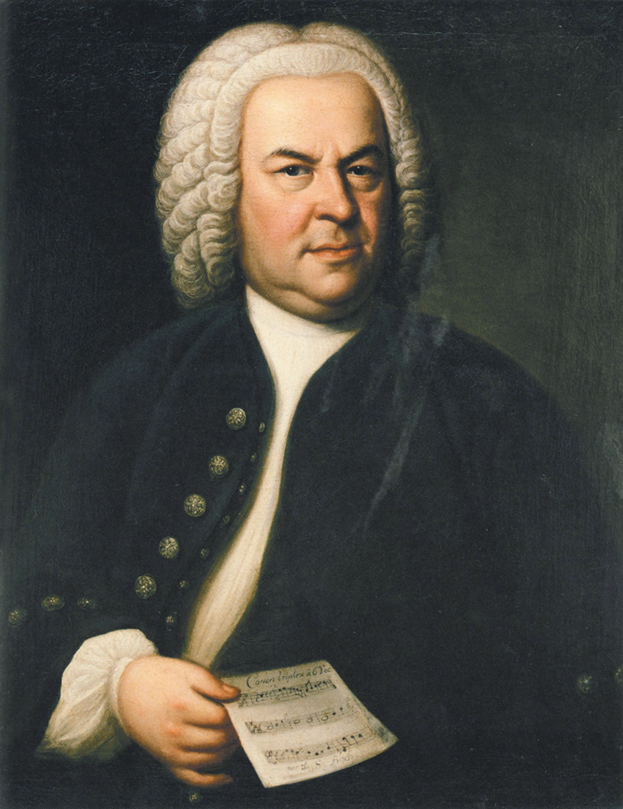
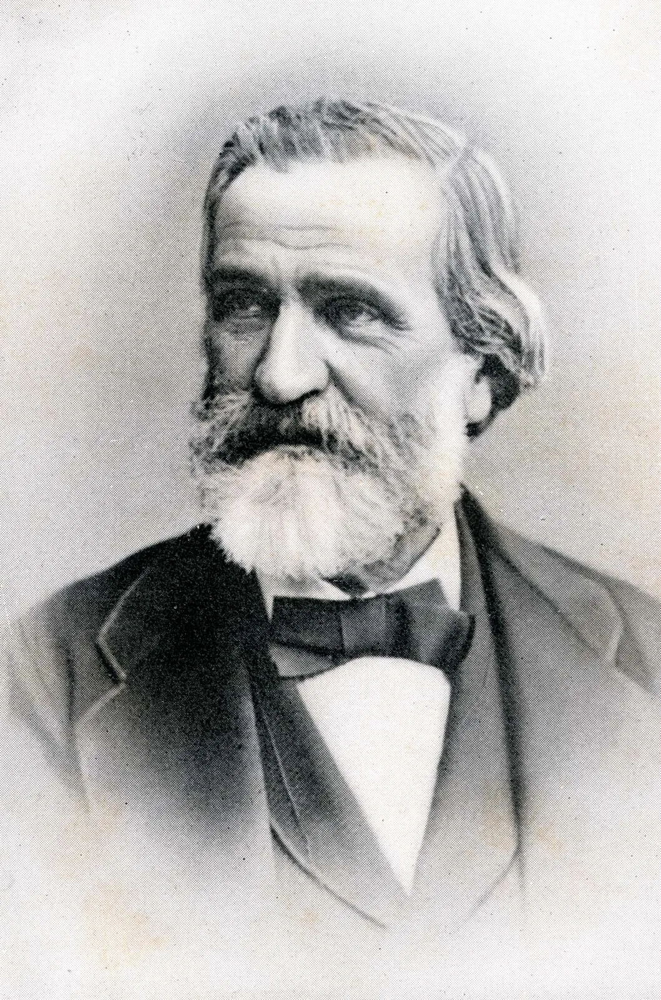

APA YANG KAMI TAWARKAN

Rekaman
Dapatkan Rekaman Fisik
Partitur
Cari Partitur Musik Lengkap

Alat Musik
Dengan Harga Terjangkau
Para Komposer

MOZART
Mozart dianggap sebagai salah satu dari komponis musik klasik yang paling terkenal dalam sejarah

BACH
Bach menggubah musik untuk alat musik organ, harpsichord, clavichord dan orkestra hingga lebi dari 1000 lagu

TCHAIKOVSKY
Komposer Rusia pada zaman Romantik, Karyanya yang terkenal seperti Swan Lake dan Nutcracker

BEETHOVEN
Komponis klasik dari Jerman, terkenal dengan 5th Symphony-nya dan Für Elise
VIVALDI
Komponis musik baroque dari Italia yang dijuluki il Prete Rosso dan dikenal sebagai maestro alat musik biola

CHOPIN
Seorang komponis dan pianis virtuoso dari Polandia serta dikenal sebagai slaah satu musisi romantik terbesar

VERDI
Komponis Italia yang dikenal dengan opera ciptaannya. Dikenal sebagai komponis opera berpengaruh abad ke-19
HANDEL
Handel dilahirkan pada tahun yang sama dengan J.S.Bach. Ayahnya merupakan seorang ahli bedah dan tukang cukur
2020 All Rights Reserved. Design by Free Html Templates